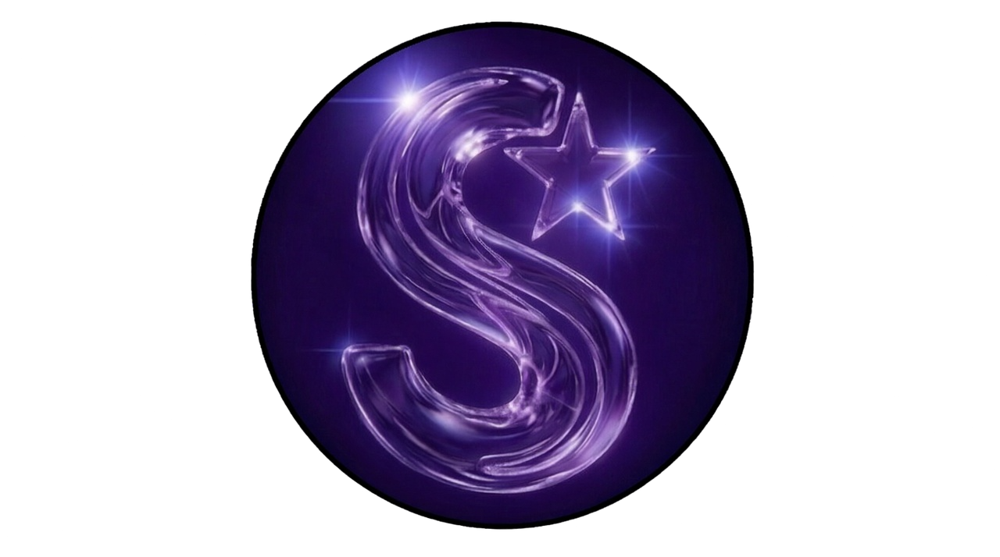

2.5 → 3.0
Раньше мы были модом. Теперь будем чем-то больше.Ниже — то, что мы строим. Нажми на строку, чтобы прочитать.
мы не называем дат. просто жди StarDLC · 2.5 — первый шаг, 3.0 — всё, что за ним